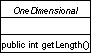

| From looking at the window below, figures in the Editor pane are elements of this class. So to make a new diagram type, this class would need to be extended. In this particular diagram, there are four instances of FigClass (shown third from the left in the above hierarchy). |
 |
 Example of a FigClass |
Back to Argo/UML Home